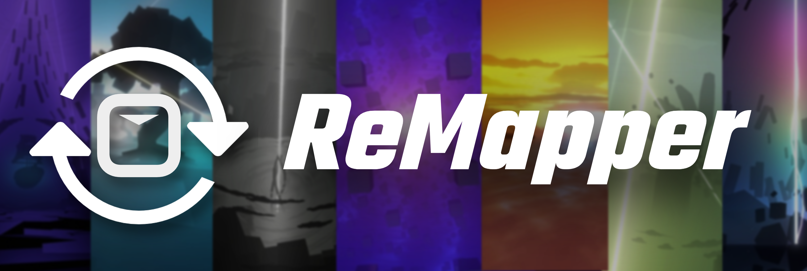

Vítejte v ReMapper!
Toto je TypeScript knihovna navržená pro vytváření Beat Saber modchartů. Modeluje schéma beatmapy pomocí obalových tříd a umožňuje jednodušší a typově bezpečný způsob skriptování.
Implementuje funkce ze základní hry a také z Aeroluna's Heck suite.
- Schéma základní hry
- Heck schéma
Proč ReMapper vznikl:
- Původně byl vytvořen pro zefektivnění technik vyvinutých během tvorby mapy "Somewhere Out There".
- Vznikl z frustrace při hledání informací o tom, jak psát/manipulovat se syrovým JSON beatmap formátem.
- Snaha vyhnout se kopírování pomocných funkcí mezi projekty.
I když byl původně vytvořen pro osobní použití, ReMapper (a kód z něj odvozený) byl použit v mnoha dalších projektech.